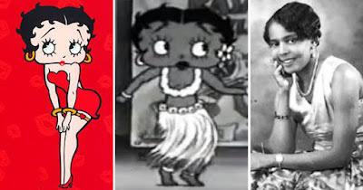

ESTHER JONES: the real Betty Boop
About the Legend
- The iconic cartoon character Betty Boop was inspired by a Black jazz singer in Harlem. Introduced by cartoonist Max Fleischer in 1930, the caricature of the jazz age flapper was the first and most famous sex symbol in animation. Betty Boop is best known for her revealing dress, curvaceous figure, and signature vocals “Boop Oop A Doop!” While there has been controversy over the years, the inspiration has been traced back to Esther Jones who was known as “Baby Esther” and performed regularly in the Cotton Club during the 1920s.
- Vaudeville performer Esther Jones was known on stage by many names, including “Baby Esther,” “Little Esther,” “Farina’s Kid Sister,” and “Miniature Florence Mills,” is widely, although not universally, credited with being the inspiration for the Betty Boop cartoon character. Jones was born Esther Lee Jones in 1918 in Chicago, Illinois, to William Jones and Gertrude Jones. She formerly began singing, dance, and acrobatics training at 4, and by 1924, when she was six years old, Jones won first prize at a Charleston dance contest in the city.
- In 1928, the Jones family moved to Harlem, New York. At seven, Jones was later known for adopting the popular singing style, scat, which emphasized the baby-style of “b” and “d” sounds and nonsense syllables such as Boo-Boo-Boo’ and ‘Doo-Doo-Doo.’ Consequently, she was a sought-after child performer in the city, and was a fixtured entertainer in the famous Cotton Club and the Everglades Nightclub in New York City during the latter years of the Harlem Renaissance. She added to her entertainment fame by become an extraordinary black-bottom dancer.
- In 1929, Jones was taken to Spain, where she was called “La Pandilla.” Later she performed before Sweden’s Queen Sophie Marie Viktoria and King Gustaf V, in Stockholm. Despite her notoriety, she also experienced blatant racism when denied a glass of milk in an American-operated restaurant in Stockholm. The business, however, was forced to close after her treatment there became public knowledge.
- Jones performed at the Moulin Rouge, Casino de Paris, and the Empire in Paris, France. There she was dubbed the “Miniature Josephine Baker.” While in Europe, she was paid an average $750 per week for her performances and by age 11, Jones was the highest-paid child on stage globally. After performing, Jones would go backstage to play with dolls. Whenever she performed, both parents were in attendance.
- In 1930, Fleisher Studios in Hollywood introduced the cartoon character Betty Boop. Unfortunately, when her character become the first and most famous sex symbol in animation she was whitewashed with most people having no idea where the original inspiration came from.
- Jones never received any royalties or performing credits despite the fact that a lawsuit would eventually expose Betty Boop’s true origins. The lawsuit ironically was brought by Helen Kane, a white performer, who sued Fleisher Studios for appropriating her “Betty Boop” character without her permission and without the payment of royalties. Over the course of the Fleisher Studios v. Kane trial, it was revealed that Kane had begun mimicking Jones’ scat act and even sang the same song, “I Want to Be Loved By You’ including the “Boop-Boop-a-Doop” reference. When Kane lost the lawsuit, other studios felt emboldened to promote the Betty Boop character but it recognized neither Kane or Jones as the source.
- In 1934, Jones, now 16, performed in Philadelphia at a midnight benefit performance for the NAACP. That same year, she gave a stellar performance at the American Embassy in Rio de Janeiro, Brazil at the request of then Ambassador Jefferson Caffery. Brazil’s President Getúlio Dornelles Vargas, was in the audience and praised the performance and performer.
- By 1940, however, the entertainment career of now 22-year-old Esther Jones, was over. She was no longer a child singing or dancing sensation. Esther Jones, now widely credited with influencing the iconic sex symbol Betty Boop, died in 1984 in New York City from liver and kidney complications. She was 66. Regardless of her role in the development of the Betty Boop cartoon character, Jones should be remembered as a child star with a brief but remarkable career in the entertainment industry.